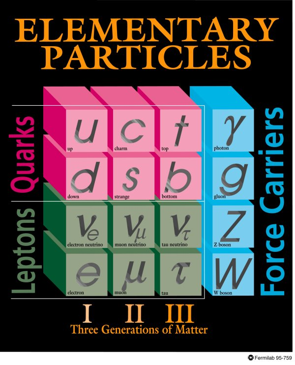
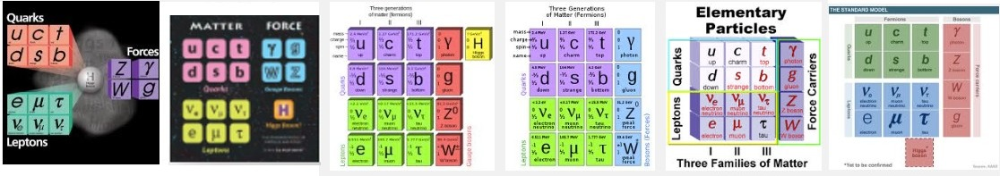
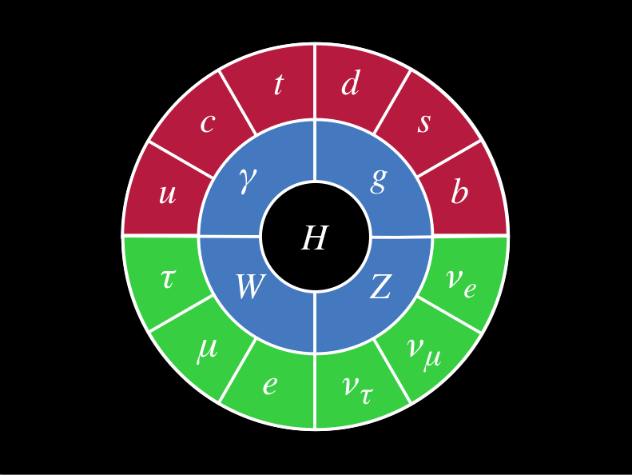

Recently I've been more involved in communication, education, and outreach activities via the "Snowmass" Community Summer Study. One of the goals we discussed was to get to the point that the public is more aware of the fundamental particles. Ideally, we'd like something as iconic as the periodic table (which is rotated from Mendeleev's original).

Our standard graphic for the standard model builds on this tabular format, which is not unreasonable with the three generations of fermions for the columns and rows pointing to the up/down pairing of the SU(2) symmetry in the weak force. It's a cute graphic, but it has a number of problems for communicating with the public
- the Higgs is absent
- the 3-d effect is meaningless and is second only to our notorious use of Comic Sans for painting physicists as being inept in the graphic design department

It seems easy enough to add the Higgs to this table, but there seems no agreement on where to put it as you can see from Google's image search.

From a physicists point of view there are some other problems that actually harm those starting to learn the standard model for real
- there symmetry for the strong force (the RGB colors of the quarks) is not reflected at all leading to the idea that there is only one type of up quark.
- the complications about the left- and right- handed parts of the leptons in the weak interaction
- the mixing between the quarks
- the rows and columns don't mean anything for the force carriers, and any sort of group-theoretic structure for the gauge bosons is missing
In June, I went to the Sheffield Documentary Film Festival for the screening of Particle Fever. It's a great film that humanizes fundamental particle physics in an emotional, funny, and romantic way. It also has some great graphics. One of my favorite parts was this new way of representing the fundamental particles. David Kaplan sent me this mockup, that it looks like he made in Keynote, and I had my own go at it with some different fonts.
{kind=link}

Here's what I like about it
- it looks complete (which the standard model is in a certain sense), unlike like a table that can keep being appended with rows and columns
- it has a fresh, flat design that lends itself way to an iconic image (stickers, t-shirts, etc.)
- it is minimal, but it still has some basic structure
- rings of fermions, vector bosons, scalar (Higgs) boson
- quarks/leptons are top/bottom or red/green
- families are still there in the clockwise orientation
- the Higgs is central (I'm kind of kidding, but the Higgs is a unique, central part of the theory and it has gathered a huge amount of attention to the field)
Of course, the graphic is not perfect. I've thought about variations. For instance, rearranging the fermions from a clockwise oriented flow to a left/right and top/bottom symmetry for the quark/lepton and weak force (SU(2) doublet) structure. One could play with color a bit so that the up/down-type quarks and leptons have a common coloring in some way. However, all of these changes also can be given the same criticism I gave the standard standard model graphic at the top. For instance, focusing on the weak interaction over the strong interaction.
You can see the graphic near the end of this trailer for Particle Fever, where it then gets dressed up with a Penrose tiling and some supersymmetric friends.